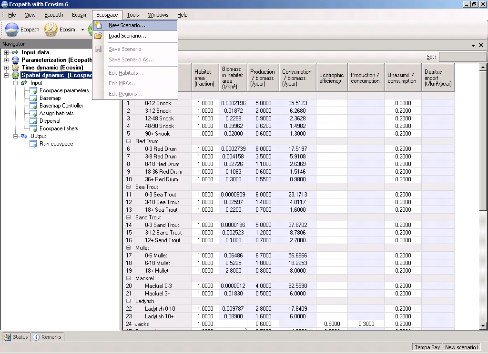
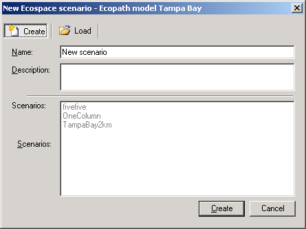
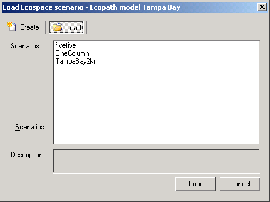

], which will open the Load Ecospace scenario dialogue box (Figure 10.2 b). Select the Create option. This will open the New Ecospace scenario dialogue box (Figure 10.2a) where you can re-name your new scenario and add a description.
], which will open the Load Ecospace scenario dialogue box (Figure 10.2 b). Select the Create option. This will open the New Ecospace scenario dialogue box (Figure 10.2a) where you can re-name your new scenario and add a description.Ecospace (Walters et al. 1999) is a dynamic, spatial version of Ecopath, incorporating all the key elements of Ecosim. Ecospace dynamically allocates biomass across a grid map (sketched with a mouse by the user, and typically defined by 20 x 20 cells), while accounting for:
A level of fishing effort that is proportional, in each cell, to the overall profitability of fishing in that cell, and whose distribution can also be made sensitive to costs (e.g., of sailing to certain areas).
See An overview of Ecospace for a more detailed introduction of Ecospace.
When working in Ecospace you work within a ‘scenario’. A given Ecopath model can have any number of Ecospace scenarios attached, and they all inherit their basic parameters (such as number of groups, group names, diets and other parameters) from the parent Ecopath model. If you change a group name or delete a group in Ecopath the changes will be carried over to existing (and new) Ecospace scenarios. A scenario keeps track of all the information that is needed to store and later duplicate a simulation.
Important note: Before using Ecospace you must have a balanced Ecopath model. It is also recommended you have fit the model to time series data (see Time series fitting in Ecosim, Hints for fitting Ecosim models to time series data and Fit to time series).
When you are ready to start using Ecospace, you must first create a new Ecospace scenario. You must have an Ecosim scenario loaded before you can create a new Ecospace scenario (using the Ecosim menu). Subsequent Ecospace simulations will use the parameter values (e.g. Vulnerability settings, Group info parameter settings) from the loaded Ecosim scenario.
After loading an Ecosim scenario, select New Scenario on the Ecospace menu (Figure 10.1). Alternatively, you can click once on the Ecospace shortcut button [], which will open the Load Ecospace scenario dialogue box (Figure 10.2 b). Select the Create option. This will open the New Ecospace scenario dialogue box (Figure 10.2a) where you can re-name your new scenario and add a description.

Figure 10.1. The Ecospace menu.


Figure 10.2aFigure 10.2b
The procedure for opening an existing Ecospace scenario is similar to that for creating a new scenario. You must have an Ecosim scenario loaded before you can create a new Ecospace scenario (using the Ecosim menu). After loading the Ecosim scenario, open the Load Ecospace scenario dialogue box by selecting Load scenario from the Ecospace menu. Existing Ecospace scenarios will be listed in the Scenarios window (Figure 10.2b). Select the scenario you wish to load and click the Load button at the bottom of the dialogue box.
Alternatively, you can open a scenario directly using the Ecospace shortcut button []. Click on the down arrow on the right of the bottom to open a list of available Scenarios and click on the name of the desired scenario. Note that the model must be closed and re-opened before new scenarios are added to menu under the Ecopath shortcut button. New scenarios can always be accessed from the Load Ecospace scenario dialogue box, regardless of when they were created.
Deleting an Ecospace scenario is easily done using the Load Ecospace scenario dialogue box. Simply select the scenario you wish to delete in the Scenarios window and click the Delete button at the top of the dialogue box. The Load button at the bottom of the box will then change to a Delete button, which must be clicked. You will be given the option to proceed or cancel. Clicking Yes implements deletion. Clicking No cancels deletion and you can then exit the dialogue box by clicking the Cancel button.
WARNING: Scenario deletion cannot be undone.
You can save a scenario at any time by selecting Save scenario on the Ecospace menu.
The Ecospace menu also has a Save As option, allowing you to save your scenario under a new name. This is an important feature that allows you to preserve properties of an Ecospace scenario that you are happy with, while exploring the impact of other factors in different scenarios. It is also a useful way to create a backup of a successful scenario before trying out new parameter values.
 Edit habitats…
Edit habitats…Opens the Edit habitats dialogue box, used for setting up the Ecospace Base map. See Define Ecospace habitats for help with this dialogue box.
 Edit MPAs…
Edit MPAs…Opens the Edit MPAs dialogue box, used for setting up the Ecospace base map. See Define Ecospace habitats for help with this dialogue box.
 Edit regions…
Edit regions…Opens the Edit regions dialogue box, used for setting up the Ecospace base map. See Define Ecospace habitats for help with this dialogue box.